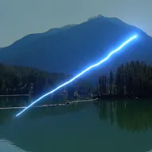

Feixe de energia

Desenha um feixe de luz brilhante com um núcleo intenso e um halo suave entre dois pontos, podendo ondular e crescer ao longo do comprimento.
Configurações
| Configuração | Tipo | Intervalo | Padrão |
|---|---|---|---|
| Início | Ponto (X, Y) | -4000 px a 4000 px | -150 px, 100 px |
| Fim | Ponto (X, Y) | -4000 px a 4000 px | 150 px, -100 px |
| Cor do brilho | Cor | – | #4DA6FF |
| Cor do halo | Cor | – | #2B5CFF |
| Largura | Número | 0.5 a 100 | 6 |
| Brilho | Número | 0 a 4 | 1.2 |
| Halo | Número | 0 a 4 | 0.5 |
| Largura do halo | Número | 1 a 400 | 40 |
| Progresso | Número | 0 a 1 | 1 |
| Comprimento | Número | 0 a 1 | 1 |
| Ondulação | Número | 0 a 2 | 0.3 |
| Frequência | Número | 0.1 a 100 | 6 |
| Evolução | Número | -1000 a 1000 | 0 |
| Opacidade | Número | 0 a 1 | 1 |
| Escurecer fundo | Número | 0 a 1 | 0.4 |
| Mesclagem | Opção | Adicionar, Tela, Normal | Adicionar |